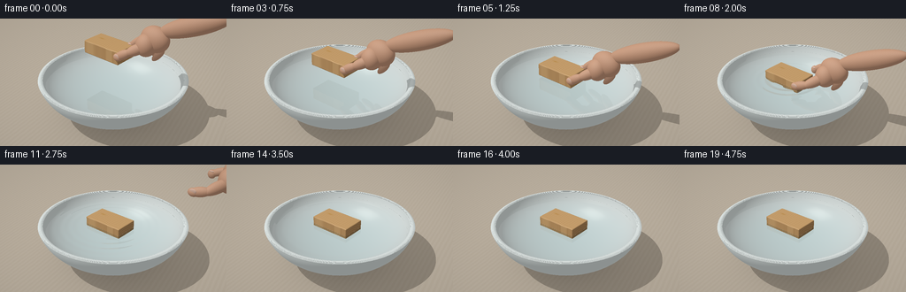
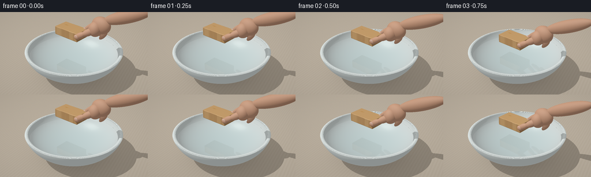

CODING AGENTS AS PIXEL WORLD MODELS
traex/GPT-6.1-Sol · phygen_009
点击播放 · 原生 RGB 像素
此结果可播放，但该运行尚未通过最终提交审核。页面展示不代表评测通过。
逐轮保存的候选
回放视频、检查图与代码变化。
每份候选均可单独播放。实际图片检查记录在下方工具轨迹中。
候选 01播放与检查图
点击播放 · 原生 RGB 像素


展开代码变化
--- 上一保存版本
+++ 本次保存版本
@@ -0,0 +1,328 @@
+import os
+os.environ.setdefault('OPENBLAS_NUM_THREADS','1')
+from pathlib import Path
+import json, math, time
+import numpy as np
+from PIL import Image
+from artifact_io import save
+
+ROOT=Path(__file__).resolve().parent
+SPEC=json.loads((ROOT/'task_spec.json').read_text())
+W,H=SPEC['width'],SPEC['height']
+S=3
+DT=np.float32
+rng=np.random.default_rng(19)
+
+def unit(x):
+ return x/np.maximum(np.linalg.norm(x,axis=-1,keepdims=True),1e-12)
+
+def smooth(x):
+ x=np.clip(x,0,1); return x*x*(3-2*x)
+
+# Camera: a stationary, elevated three-quarter close-up.
+camera=np.array([3.4,-6.2,4.9],DT)
+target=np.array([0,0,.82],DT)
+forward=unit(target-camera)
+right=unit(np.cross(forward,[0,0,1])).astype(DT)
+up=unit(np.cross(right,forward)).astype(DT)
+xx,yy=np.meshgrid((np.arange(W*S)+.5)/(W*S)*2-1,1-(np.arange(H*S)+.5)/(H*S)*2)
+# Very mild perspective rather than an infographic-like orthographic view.
+D=unit(forward+xx[...,None]*.338*right+yy[...,None]*.338*(H/W)*up).reshape(-1,3).astype(DT)
+O=np.broadcast_to(camera,D.shape).copy()
+light=unit(np.array([-3.5,-4.0,7.5],DT))
+
+class Scene:
+ def __init__(self,t):
+ self.t=t
+ contact=1.5
+ if t<=contact:
+ base=1.55-(1.55-.9)*smooth(t/contact)
+ elif t<2.0:
+ base=.9-.127*smooth((t-contact)/.5)
+ else:
+ u=t-2; base=.773+.016*np.exp(-1.45*u)*np.sin(7*u)
+ u=max(0,t-1.65)
+ roll=.013*np.exp(-1.5*u)*np.sin(6*u) if t>1.65 else .018*(1-smooth(t/1.5))
+ yaw=-.20+.012*smooth(u/2)
+ c,s=np.cos(yaw),np.sin(yaw)
+ cz,sz=np.cos(roll),np.sin(roll)
+ rz=np.array([[c,-s,0],[s,c,0],[0,0,1]],DT)
+ ry=np.array([[cz,0,sz],[0,1,0],[-sz,0,cz]],DT)
+ self.R=rz@ry
+ self.center=np.array([-.10+.028*smooth(u/2),-.02+.014*smooth(u/2),base+.155],DT)
+ self.half=np.array([.51,.295,.155],DT)
+ self.ell=[]
+ # A pinch grip: wrist and palm, then smoothly rounded finger segments.
+ if t<3.25:
+ release=smooth((t-1.7)/.5)
+ move=smooth((t-1.9)/1.35)
+ shift=np.array([2.3*move,.38*move,1.75*move],DT)
+ # Coordinates local to the long axis of the wooden block.
+ def wp(p):
+ return self.center+self.R@np.asarray(p,DT)+shift
+ def ell(p,r):
+ self.ell.append((wp(p),np.asarray(r,DT),self.R.copy(),4))
+ def seg(a,b,rad,depth=None):
+ a,b=wp(a),wp(b); v=b-a; L=np.linalg.norm(v); z=unit(v)
+ aux=np.array([0,1,0],DT)
+ if abs(np.dot(aux,z))>.93: aux=np.array([1,0,0],DT)
+ x=unit(np.cross(aux,z)); y=np.cross(z,x)
+ self.ell.append(((a+b)/2,np.array([rad,depth or rad,L/2+rad*.72],DT),np.stack([x,y,z],axis=1),4))
+ # Forearm exits toward the upper-right edge, not a disembodied fist.
+ seg([1.27,.24,.68],[2.45,.36,1.20],.205,.18)
+ ell([1.11,.18,.49],[.34,.225,.29])
+ ell([.99,.04,.37],[.23,.23,.255])
+ # Index finger bends over the far edge.
+ opening=.22*release
+ seg([.99,.31,.48],[.69,.32+opening,.36],.100,.086)
+ seg([.69,.32+opening,.36],[.43,.265+opening,.11+.14*release],.084,.073)
+ ell([.425,.264+opening,.10+.14*release],[.09,.072,.098])
+ # A secondary middle finger visible just behind the index.
+ seg([1.10,.43,.42],[.80,.47+opening,.24],.097,.082)
+ seg([.80,.47+opening,.24],[.60,.36+opening,.075+.16*release],.078,.068)
+ # Ring and little fingers curl near the palm.
+ seg([1.21,.36,.29],[1.00,.35,.07],.09,.075)
+ seg([1.28,.24,.25],[1.12,.19,.035],.078,.068)
+ # Thumb pad on the near short corner, releases sideways before lifting.
+ seg([1.0,-.035,.36],[.76,-.24-opening*.7,.22],.12,.105)
+ seg([.76,-.24-opening*.7,.22],[.50,-.30-opening*.8,.055+.12*release],.102,.088)
+ ell([.51,-.30-opening*.8,.052+.12*release],[.113,.08,.088])
+ # Discreet nail plates; nail is oriented toward the camera and light.
+ self.ell.append((wp([.525,-.355-opening*.8,.093+.12*release]),np.array([.073,.018,.048],DT),self.R.copy(),5))
+ self.ell.append((wp([.430,.239+opening,.171+.14*release]),np.array([.060,.040,.015],DT),self.R.copy(),5))
+
+ def hits(self,o,d,water=True,hand=True):
+ n=len(d); ts=np.full(n,np.inf,DT); ids=np.full(n,-1,np.int16); ns=np.zeros_like(d)
+ def put(t,norm,mid):
+ m=(t>1e-4)&(t<ts)
+ ts[m]=t[m]; ids[m]=mid
+ if np.ndim(norm)==1: ns[m]=norm
+ else: ns[m]=norm[m]
+ # Ground plane: a muted, naturally grained oak tabletop.
+ t=-o[:,2]/np.where(abs(d[:,2])>1e-10,d[:,2],1e-10)
+ put(t,np.array([0,0,1],DT),0)
+ # White ceramic bowl, formed from nested smooth ellipsoids.
+ C=np.array([0,0,1.22],DT)
+ for radii,mid,flip in [(np.array([1.80,1.80,1.20],DT),1,False),(np.array([1.69,1.69,1.08],DT),2,True)]:
+ q=(o-C)/radii; v=d/radii
+ A=np.sum(v*v,axis=1); B=np.sum(q*v,axis=1); cc=np.sum(q*q,axis=1)-1
+ disc=B*B-A*cc; root=np.sqrt(np.maximum(disc,0))
+ for sign in [-1,1]:
+ t=(-B+sign*root)/A
+ z=o[:,2]+t*d[:,2]
+ valid=(disc>=0)&(z>=.021)&(z<=1.04)
+ p=o+t[:,None]*d
+ norm=unit((p-C)/(radii*radii))*(-1 if flip else 1)
+ put(np.where(valid,t,np.inf),norm,mid)
+ # A subtly rounded, broad porcelain rim, represented as small analytic bands.
+ for k in range(10):
+ # Rounded cross-section strips: normal rotates continuously across lip.
+ r0=1.665+k*(1.781-1.665)/10
+ r1=1.665+(k+1)*(1.781-1.665)/10
+ rm=(r0+r1)/2
+ z=1.036+.023*np.sin(np.pi*(rm-1.665)/.116)
+ t=(z-o[:,2])/np.where(abs(d[:,2])>1e-10,d[:,2],1e-10)
+ p=o+t[:,None]*d; r=np.linalg.norm(p[:,:2],axis=1)
+ slope=.023*np.pi/.116*np.cos(np.pi*(rm-1.665)/.116)
+ norm=unit(np.column_stack([-slope*p[:,0]/np.maximum(r,1e-8),-slope*p[:,1]/np.maximum(r,1e-8),np.ones(n)]))
+ put(np.where((r>=r0)&(r<r1),t,np.inf),norm,1)
+ # Water is horizontal, with actual wave gradients used for reflected light.
+ if water:
+ t=(.90-o[:,2])/np.where(abs(d[:,2])>1e-10,d[:,2],1e-10)
+ p=o+t[:,None]*d; r=np.linalg.norm(p[:,:2],axis=1)
+ wnorm=self.water_normal(p)
+ put(np.where(r<1.615,t,np.inf),wnorm,3)
+ # Chamfered wooden cuboid: analytic bounding interval plus exact rounded-box SDF.
+ lo=(o-self.center)@self.R; ld=d@self.R
+ safe=np.where(abs(ld)>1e-9,ld,1e-9)
+ a=(-self.half-lo)/safe; b=(self.half-lo)/safe
+ entry=np.max(np.minimum(a,b),axis=1); leave=np.min(np.maximum(a,b),axis=1)
+ valid=(leave>=np.maximum(entry,1e-4))&(entry<ts)
+ ix=np.flatnonzero(valid)
+ if len(ix):
+ tt=np.maximum(entry[ix],1e-4); oo=lo[ix]; dd=ld[ix]
+ bevel=.022; box=self.half-bevel
+ for step in range(36):
+ lp=oo+tt[:,None]*dd
+ q=np.abs(lp)-box
+ dist=np.linalg.norm(np.maximum(q,0),axis=1)+np.minimum(np.max(q,axis=1),0)-bevel
+ tt+=np.maximum(dist,0)
+ if np.max(np.maximum(dist,0))<3e-5: break
+ lp=oo+tt[:,None]*dd; q=np.abs(lp)-box
+ norm=unit(np.maximum(q,0)*np.sign(lp))@self.R.T
+ distance=np.linalg.norm(np.maximum(q,0),axis=1)+np.minimum(np.max(q,axis=1),0)-bevel
+ good=(tt<=leave[ix]+1e-4)&(distance<.0002)
+ bt=np.full(n,np.inf,DT); bn=np.zeros_like(d)
+ bt[ix[good]]=tt[good]; bn[ix[good]]=norm[good]
+ put(bt,bn,6)
+ if hand:
+ for C,rad,R,mid in self.ell:
+ q=((o-C)@R)/rad; v=(d@R)/rad
+ A=np.sum(v*v,axis=1); B=np.sum(q*v,axis=1)
+ disc=B*B-A*(np.sum(q*q,axis=1)-1)
+ t=(-B-np.sqrt(np.maximum(disc,0)))/A
+ good=(disc>=0)&(t>1e-4)&(t<ts)
+ if np.any(good):
+ p=o[good]+t[good,None]*d[good]
+ norm=unit((((p-C)@R)/(rad*rad))@R.T)
+ ts[good]=t[good]; ids[good]=mid; ns[good]=norm
+ return ts,ids,ns
+
+ def water_normal(self,p):
+ a=p[:,0]-self.center[0]; b=p[:,1]-self.center[1]
+ r=np.sqrt(a*a+b*b)+1e-5
+ age=max(self.t-1.5,0)
+ g=np.zeros(len(p),DT)
+ if age>0:
+ for j in range(3):
+ front=.40+.68*age-j*.20
+ dr=r-front
+ amp=.0075*np.exp(-.62*age)*np.exp(-dr*dr/.050)
+ g+=amp*(30*np.cos(30*dr)-2*dr/.050*np.sin(30*dr))
+ # A faint standing wave near the ceramic wall.
+ g+=.015*np.sin(r*22-age*5)*np.exp(-1.5*age)*smooth((r-.8)/.6)
+ return unit(np.column_stack([-g*a/r,-g*b/r,np.ones(len(p))])).astype(DT)
+
+ def environment(self,d):
+ z=np.clip(d[:,2],0,1)
+ c=np.broadcast_to(np.array([.61,.66,.68],DT),(len(d),3)).copy()
+ c+=z[:,None]*np.array([.16,.13,.095],DT)
+ # Broad rectangular studio window, reflected in the water and glaze.
+ key=unit(np.array([-2.8,-3.4,5.8],DT))
+ tangent=unit(np.cross(key,[0,0,1])); vertical=np.cross(tangent,key)
+ dot=np.maximum(d@key,1e-4)
+ sx=(d@tangent)/dot; sy=(d@vertical)/dot
+ panel=np.exp(-((sx/.32)**8+(sy/.21)**8))
+ bars=(.91+.09*np.cos(sx*35)**16)
+ c+=panel[:,None]*bars[:,None]*np.array([1.25,1.21,1.12],DT)
+ # Softer fill on the other side.
+ fill=unit(np.array([4,1,4],DT)); c+=np.maximum(d@fill,0)[:,None]**35*.29
+ return c
+
+ def trace(self,o,d,depth=0,water=True):
+ ts,ids,n=self.hits(o,d,water)
+ out=self.environment(d)
+ ok=ids>=0
+ if not np.any(ok): return out
+ ix=np.flatnonzero(ok); p=o[ix]+ts[ix,None]*d[ix]; normal=n[ix]; v=-d[ix]; mid=ids[ix]
+ albedo=np.ones((len(ix),3),DT)
+ rough=np.full(len(ix),.35,DT)
+ # Table: subtle, low-contrast fine grain rather than a distracting pattern.
+ m=mid==0
+ q=p[m]
+ grain=np.sin(q[:,0]*58+.65*np.sin(q[:,1]*1.6)+.3*np.sin(q[:,0]*7))
+ fine=np.sin(q[:,0]*190+np.sin(q[:,1]*3))
+ value=.012*grain+.006*fine
+ albedo[m]=np.array([.52,.445,.35])+value[:,None]
+ # Slight contact shading beneath bowl, a broad soft resting shadow.
+ r=np.linalg.norm(q[:,:2],axis=1)
+ ao=1-.24*np.exp(-r*r/1.15)-.18*np.exp(-((q[:,0]-.25)**2+(q[:,1]-.15)**2)/2.4)
+ albedo[m]*=ao[:,None]
+ m=(mid==1)|(mid==2)
+ albedo[m]=[.77,.84,.82]
+ # Lower inner bowl is darkened smoothly by its enclosure.
+ inner=mid==2
+ albedo[inner]*=(.82+.18*np.clip(p[inner,2]/1.04,0,1))[:,None]
+ rough[m]=.16
+ m=(mid==4)
+ q=p[m]
+ skintex=.006*np.sin(q[:,0]*161+np.sin(q[:,1]*120))*np.sin(q[:,2]*145)
+ albedo[m]=np.array([.62,.329,.205])+skintex[:,None]
+ rough[m]=.45
+ m=mid==5
+ albedo[m]=[.73,.47,.36]; rough[m]=.23
+ m=mid==6
+ q=(p[m]-self.center)@self.R
+ nn=normal[m]@self.R
+ grainphase=q[:,1]*112+2.4*np.sin(q[:,0]*5.0)+1.1*np.sin(q[:,0]*17+q[:,1]*8)
+ lines=np.sin(grainphase)
+ fibers=np.maximum(np.cos(grainphase),0)**12
+ small=np.sin(q[:,1]*370+q[:,0]*4)*.013
+ wood=np.array([.59,.338,.137])+(.045*lines-.07*fibers+small)[:,None]*np.array([1,.75,.38])
+ # Growth rings on the end grain make this unmistakably real timber.
+ end=abs(nn[:,0])>.7
+ ringr=np.sqrt((q[:,1]+.05)**2+((q[:,2]+.39)*1.3)**2)
+ endline=np.sin(ringr*91+np.sin(q[:,1]*11))
+ wood[end]=np.array([.48,.262,.103])+endline[end,None]*np.array([.045,.029,.015])
+ # A modest knot, with bent grain confined to one end of the top face.
+ knot=np.sqrt(((q[:,0]+.27)*.75)**2+((q[:,1]-.06)*2.1)**2)
+ knotshade=.065*np.exp(-knot*knot/.003)
+ wood-=knotshade[:,None]
+ submerged=p[m,2]<.9002
+ wood[submerged]*=[.72,.79,.82]
+ albedo[m]=wood; rough[m]=.48
+ # Light, a large-window diffuse term, blue-gray ambient and soft occlusion.
+ nl=np.maximum(normal@light,0)
+ ambient=.37+.095*np.maximum(normal[:,2],0)
+ diffuse=.77*nl
+ # Shadow pass. A finite fill term keeps all silhouettes soft and readable.
+ if depth==0:
+ st,si,_=self.hits(p+normal*.003,np.broadcast_to(light,p.shape),water=False)
+ blocked=st<12
+ diffuse[blocked]*=.18
+ illumination=ambient+diffuse
+ shaded=albedo*illumination[:,None]
+ halfv=unit(v+light)
+ ndh=np.maximum(np.sum(normal*halfv,axis=1),0)
+ exponent=2/(rough*rough)-2
+ specular=(ndh**exponent)*(.055+.17*(mid==1)+.15*(mid==2)+.015*(mid==5))
+ shaded+=specular[:,None]*np.array([1.05,1.01,.92])
+ # Glazed ceramic softly reflects the studio environment.
+ ceramic=(mid==1)|(mid==2)
+ if np.any(ceramic):
+ dc=d[ix[ceramic]]; nc=normal[ceramic]
+ refl=dc-2*np.sum(dc*nc,axis=1)[:,None]*nc
+ f=.035+.065*(1-np.maximum(np.sum(v[ceramic]*nc,axis=1),0))**4
+ env=self.environment(refl)
+ shaded[ceramic]=shaded[ceramic]*(1-f[:,None])+env*f[:,None]
+ # Water transmits the bowl and the submerged wood, and reflects the window.
+ wm=mid==3
+ if np.any(wm):
+ pw=p[wm]; nw=normal[wm]; dw=d[ix[wm]]
+ cosi=np.clip(-np.sum(dw*nw,axis=1),0,1)
+ eta=1/1.333
+ refr=eta*dw+(eta*cosi-np.sqrt(np.maximum(1-eta*eta*(1-cosi*cosi),0)))[:,None]*nw
+ transmitted=self.trace(pw+refr*.002,refr,depth+1,water=False) if depth<2 else np.tile([.32,.48,.47],(len(pw),1))
+ # Subtle optical absorption with blue-green water; still transparent.
+ ht,hid,hn=self.hits(pw+refr*.002,refr,water=False)
+ distance=np.minimum(ht,2.5)
+ absorption=np.exp(-distance[:,None]*np.array([.26,.095,.055]))
+ transmitted=transmitted*absorption+np.array([.16,.34,.34])*(1-absorption)
+ reflect=dw-2*np.sum(dw*nw,axis=1)[:,None]*nw
+ reflected=self.trace(pw+nw*.003,reflect,depth+1,water=False) if depth<1 else self.environment(reflect)
+ fres=.025+.975*(1-cosi)**5
+ fres=np.minimum(fres+.055,.78)
+ watercolor=transmitted*(1-fres[:,None])+reflected*fres[:,None]
+ # Contact-meniscus and wave crests are gentle, never splash-like.
+ q=(pw-self.center)@self.R
+ edge=np.maximum(abs(q[:,0])-.51,abs(q[:,1])-.295)
+ men=np.exp(-(edge/.018)**2)*((abs(q[:,0])<.55)&(abs(q[:,1])<.34))*smooth((self.t-1.5)/.3)
+ watercolor*=1-.07*men[:,None]
+ shaded[wm]=watercolor
+ out[ix]=shaded
+ return out
+
+def render(t):
+ scene=Scene(t)
+ c=scene.trace(O,D)
+ # Neutral photographic tone curve with ample detail in both white glaze and timber.
+ c=np.maximum(c,0)
+ c=c/(1+.26*c)
+ c=np.clip(c,0,1)**(1/2.2)
+ # Very light lens vignette, static and without video noise.
+ vign=1-.035*(xx*xx+yy*yy)
+ c=c.reshape(H*S,W*S,3)*vign[...,None]
+ image=Image.fromarray(np.uint8(np.clip(c*255,0,255)))
+ return np.asarray(image.resize((W,H),Image.Resampling.LANCZOS))
+
+def main():
+ frames=[]
+ start=time.time()
+ for i in range(SPEC['frames']):
+ frames.append(render(i/SPEC['fps']))
+ print(f'rendered {i+1}/{SPEC["frames"]} in {time.time()-start:.1f}s',flush=True)
+ frames=np.asarray(frames,dtype=np.uint8)
+ save(frames,ROOT)
+ print('Saved RGB video and player.',flush=True)
+
+if __name__=='__main__': main()
可观测工具轨迹
实际执行的命令与返回图片。
命令 1exit 0
/bin/bash -lc "ls -la && cat prompt.txt && printf '\\n---RULES---\\n' && cat GENERATION_RULES.md && printf '\\n---SPEC---\\n' && cat task_spec.json"
命令 2exit 0
/bin/bash -lc "cat artifact_io.py && printf '\\n---packages---\\n' && python - <<'PY' import importlib.util for name in ['numpy','PIL','scipy']: print(name, bool(importlib.util.find_spec(name))) PY"
命令 3exit 0
/bin/bash -lc "command -v ffmpeg || true; python - <<'PY'
import generate as g
import numpy as np
for t in [0,1.5,2,3.25,4.75]:
s=g.Scene(t)
for label,p in [('wood',s.center),('bowl',np.array([0,0,.9]))]:
v=p-g.camera; dep=v@g.forward
x=((v@g.right)/dep/.338+1)*128
y=(1-(v@g.up)/dep/(.338*144/256))*72
print(t,label,'screen',round(x,1),round(y,1),'z',round(float(p[2]),3))
PY"命令 4exit 0
/bin/bash -lc "cat > generate.py <<'PY'
import os
os.environ.setdefault('OPENBLAS_NUM_THREADS','1')
from pathlib import Path
import json, math, time
import numpy as np
from PIL import Image
from artifact_io import save
ROOT=Path(__file__).resolve().parent
SPEC=json.loads((ROOT/'task_spec.json').read_text())
W,H=SPEC['width'],SPEC['height']
S=3
DT=np.float32
rng=np.random.default_rng(19)
def unit(x):
return x/np.maximum(np.linalg.norm(x,axis=-1,keepdims=True),1e-12)
def smooth(x):
x=np.clip(x,0,1); return x*x*(3-2*x)
# Camera: a stationary, elevated three-quarter close-up.
camera=np.array([3.4,-6.2,4.9],DT)
target=np.array([0,0,.82],DT)
forward=unit(target-camera)
right=unit(np.cross(forward,[0,0,1])).astype(DT)
up=unit(np.cross(right,forward)).astype(DT)
xx,yy=np.meshgrid((np.arange(W*S)+.5)/(W*S)*2-1,1-(np.arange(H*S)+.5)/(H*S)*2)
# Very mild perspective rather than an infographic-like orthographic view.
D=unit(forward+xx[...,None]*.338*right+yy[...,None]*.338*(H/W)*up).reshape(-1,3).astype(DT)
O=np.broadcast_to(camera,D.shape).copy()
light=unit(np.array([-3.5,-4.0,7.5],DT))
class Scene:
def __init__(self,t):
self.t=t
contact=1.5
if t<=contact:
base=1.55-(1.55-.9)*smooth(t/contact)
elif t<2.0:
base=.9-.127*smooth((t-contact)/.5)
else:
u=t-2; base=.773+.016*np.exp(-1.45*u)*np.sin(7*u)
u=max(0,t-1.65)
roll=.013*np.exp(-1.5*u)*np.sin(6*u) if t>1.65 else .018*(1-smooth(t/1.5))
yaw=-.20+.012*smooth(u/2)
c,s=np.cos(yaw),np.sin(yaw)
cz,sz=np.cos(roll),np.sin(roll)
rz=np.array([[c,-s,0],[s,c,0],[0,0,1]],DT)
ry=np.array([[cz,0,sz],[0,1,0],[-sz,0,cz]],DT)
self.R=rz@ry
self.center=np.array([-.10+.028*smooth(u/2),-.02+.014*smooth(u/2),base+.155],DT)
self.half=np.array([.51,.295,.155],DT)
self.ell=[]
# A pinch grip: wrist and palm, then smoothly rounded finger segments.
if t<3.25:
release=smooth((t-1.7)/.5)
move=smooth((t-1.9)/1.35)
shift=np.array([2.3*move,.38*move,1.75*move],DT)
# Coordinates local to the long axis of the wooden block.
def wp(p):
return self.center+self.R@np.asarray(p,DT)+shift
def ell(p,r):
self.ell.append((wp(p),np.asarray(r,DT),self.R.copy(),4))
def seg(a,b,rad,depth=None):
a,b=wp(a),wp(b); v=b-a; L=np.linalg.norm(v); z=unit(v)
aux=np.array([0,1,0],DT)
if abs(np.dot(aux,z))>.93: aux=np.array([1,0,0],DT)
x=unit(np.cross(aux,z)); y=np.cross(z,x)
self.ell.append(((a+b)/2,np.array([rad,depth or rad,L/2+rad*.72],DT),np.stack([x,y,z],axis=1),4))
# Forearm exits toward the upper-right edge, not a disembodied fist.
seg([1.27,.24,.68],[2.45,.36,1.20],.205,.18)
ell([1.11,.18,.49],[.34,.225,.29])
ell([.99,.04,.37],[.23,.23,.255])
# Index finger bends over the far edge.
opening=.22*release
seg([.99,.31,.48],[.69,.32+opening,.36],.100,.086)
seg([.69,.32+opening,.36],[.43,.265+opening,.11+.14*release],.084,.073)
ell([.425,.264+opening,.10+.14*release],[.09,.072,.098])
# A secondary middle finger visible just behind the index.
seg([1.10,.43,.42],[.80,.47+opening,.24],.097,.082)
seg([.80,.47+opening,.24],[.60,.36+opening,.075+.16*release],.078,.068)
# Ring and little fingers curl near the palm.
seg([1.21,.36,.29],[1.00,.35,.07],.09,.075)
seg([1.28,.24,.25],[1.12,.19,.035],.078,.068)
# Thumb pad on the near short corner, releases sideways before lifting.
seg([1.0,-.035,.36],[.76,-.24-opening*.7,.22],.12,.105)
seg([.76,-.24-opening*.7,.22],[.50,-.30-opening*.8,.055+.12*release],.102,.088)
ell([.51,-.30-opening*.8,.052+.12*release],[.113,.08,.088])
# Discreet nail plates; nail is oriented toward the camera and light.
self.ell.append((wp([.525,-.355-opening*.8,.093+.12*release]),np.array([.073,.018,.048],DT),self.R.copy(),5))
self.ell.append((wp([.430,.239+opening,.171+.14*release]),np.array([.060,.040,.015],DT),self.R.copy(),5))
def hits(self,o,d,water=True,hand=True):
n=len(d); ts=np.full(n,np.inf,DT); ids=np.full(n,-1,np.int16); ns=np.zeros_like(d)
def put(t,norm,mid):
m=(t>1e-4)&(t<ts)
ts[m]=t[m]; ids[m]=mid
if np.ndim(norm)==1: ns[m]=norm
else: ns[m]=norm[m]
# Ground plane: a muted, naturally grained oak tabletop.
t=-o[:,2]/np.where(abs(d[:,2])>1e-10,d[:,2],1e-10)
put(t,np.array([0,0,1],DT),0)
# White ceramic bowl, formed from nested smooth ellipsoids.
C=np.array([0,0,1.22],DT)
for radii,mid,flip in [(np.array([1.80,1.80,1.20],DT),1,False),(np.array([1.69,1.69,1.08],DT),2,True)]:
q=(o-C)/radii; v=d/radii
A=np.sum(v*v,axis=1); B=np.sum(q*v,axis=1); cc=np.sum(q*q,axis=1)-1
disc=B*B-A*cc; root=np.sqrt(np.maximum(disc,0))
for sign in [-1,1]:
t=(-B+sign*root)/A
z=o[:,2]+t*d[:,2]
valid=(disc>=0)&(z>=.021)&(z<=1.04)
p=o+t[:,None]*d
norm=unit((p-C)/(radii*radii))*(-1 if flip else 1)
put(np.where(valid,t,np.inf),norm,mid)
# A subtly rounded, broad porcelain rim, represented as small analytic bands.
for k in range(10):
# Rounded cross-section strips: normal rotates continuously across lip.
r0=1.665+k*(1.781-1.665)/10
r1=1.665+(k+1)*(1.781-1.665)/10
rm=(r0+r1)/2
z=1.036+.023*np.sin(np.pi*(rm-1.665)/.116)
t=(z-o[:,2])/np.where(abs(d[:,2])>1e-10,d[:,2],1e-10)
p=o+t[:,None]*d; r=np.linalg.norm(p[:,:2],axis=1)
slope=.023*np.pi/.116*np.cos(np.pi*(rm-1.665)/.116)
norm=unit(np.column_stack([-slope*p[:,0]/np.maximum(r,1e-8),-slope*p[:,1]/np.maximum(r,1e-8),np.ones(n)]))
put(np.where((r>=r0)&(r<r1),t,np.inf),norm,1)
# Water is horizontal, with actual wave gradients used for reflected light.
if water:
t=(.90-o[:,2])/np.where(abs(d[:,2])>1e-10,d[:,2],1e-10)
p=o+t[:,None]*d; r=np.linalg.norm(p[:,:2],axis=1)
wnorm=self.water_normal(p)
put(np.where(r<1.615,t,np.inf),wnorm,3)
# Chamfered wooden cuboid: analytic bounding interval plus exact rounded-box SDF.
lo=(o-self.center)@self.R; ld=d@self.R
safe=np.where(abs(ld)>1e-9,ld,1e-9)
a=(-self.half-lo)/safe; b=(self.half-lo)/safe
entry=np.max(np.minimum(a,b),axis=1); leave=np.min(np.maximum(a,b),axis=1)
valid=(leave>=np.maximum(entry,1e-4))&(entry<ts)
ix=np.flatnonzero(valid)
if len(ix):
tt=np.maximum(entry[ix],1e-4); oo=lo[ix]; dd=ld[ix]
bevel=.022; box=self.half-bevel
for step in range(36):
lp=oo+tt[:,None]*dd
q=np.abs(lp)-box
dist=np.linalg.norm(np.maximum(q,0),axis=1)+np.minimum(np.max(q,axis=1),0)-bevel
tt+=np.maximum(dist,0)
if np.max(np.maximum(dist,0))<3e-5: break
lp=oo+tt[:,None]*dd; q=np.abs(lp)-box
norm=unit(np.maximum(q,0)*np.sign(lp))@self.R.T
distance=np.linalg.norm(np.maximum(q,0),axis=1)+np.minimum(np.max(q,axis=1),0)-bevel
good=(tt<=leave[ix]+1e-4)&(distance<.0002)
bt=np.full(n,np.inf,DT); bn=np.zeros_like(d)
bt[ix[good]]=tt[good]; bn[ix[good]]=norm[good]
put(bt,bn,6)
if hand:
for C,rad,R,mid in self.ell:
q=((o-C)@R)/rad; v=(d@R)/rad
A=np.sum(v*v,axis=1); B=np.sum(q*v,axis=1)
disc=B*B-A*(np.sum(q*q,axis=1)-1)
t=(-B-np.sqrt(np.maximum(disc,0)))/A
good=(disc>=0)&(t>1e-4)&(t<ts)
if np.any(good):
p=o[good]+t[good,None]*d[good]
norm=unit((((p-C)@R)/(rad*rad))@R.T)
ts[good]=t[good]; ids[good]=mid; ns[good]=norm
return ts,ids,ns
def water_normal(self,p):
a=p[:,0]-self.center[0]; b=p[:,1]-self.center[1]
r=np.sqrt(a*a+b*b)+1e-5
age=max(self.t-1.5,0)
g=np.zeros(len(p),DT)
if age>0:
for j in range(3):
front=.40+.68*age-j*.20
dr=r-front
amp=.0075*np.exp(-.62*age)*np.exp(-dr*dr/.050)
g+=amp*(30*np.cos(30*dr)-2*dr/.050*np.sin(30*dr))
# A faint standing wave near the ceramic wall.
g+=.015*np.sin(r*22-age*5)*np.exp(-1.5*age)*smooth((r-.8)/.6)
return unit(np.column_stack([-g*a/r,-g*b/r,np.ones(len(p))])).astype(DT)
def environment(self,d):
z=np.clip(d[:,2],0,1)
c=np.broadcast_to(np.array([.61,.66,.68],DT),(len(d),3)).copy()
c+=z[:,None]*np.array([.16,.13,.095],DT)
# Broad rectangular studio window, reflected in the water and glaze.
key=unit(np.array([-2.8,-3.4,5.8],DT))
tangent=unit(np.cross(key,[0,0,1])); vertical=np.cross(tangent,key)
dot=np.maximum(d@key,1e-4)
sx=(d@tangent)/dot; sy=(d@vertical)/dot
panel=np.exp(-((sx/.32)**8+(sy/.21)**8))
bars=(.91+.09*np.cos(sx*35)**16)
c+=panel[:,None]*bars[:,None]*np.array([1.25,1.21,1.12],DT)
# Softer fill on the other side.
fill=unit(np.array([4,1,4],DT)); c+=np.maximum(d@fill,0)[:,None]**35*.29
return c
def trace(self,o,d,depth=0,water=True):
ts,ids,n=self.hits(o,d,water)
out=self.environment(d)
ok=ids>=0
if not np.any(ok): return out
ix=np.flatnonzero(ok); p=o[ix]+ts[ix,None]*d[ix]; normal=n[ix]; v=-d[ix]; mid=ids[ix]
albedo=np.ones((len(ix),3),DT)
rough=np.full(len(ix),.35,DT)
# Table: subtle, low-contrast fine grain rather than a distracting pattern.
m=mid==0
q=p[m]
grain=np.sin(q[:,0]*58+.65*np.sin(q[:,1]*1.6)+.3*np.sin(q[:,0]*7))
fine=np.sin(q[:,0]*190+np.sin(q[:,1]*3))
value=.012*grain+.006*fine
albedo[m]=np.array([.52,.445,.35])+value[:,None]
# Slight contact shading beneath bowl, a broad soft resting shadow.
r=np.linalg.norm(q[:,:2],axis=1)
ao=1-.24*np.exp(-r*r/1.15)-.18*np.exp(-((q[:,0]-.25)**2+(q[:,1]-.15)**2)/2.4)
albedo[m]*=ao[:,None]
m=(mid==1)|(mid==2)
albedo[m]=[.77,.84,.82]
# Lower inner bowl is darkened smoothly by its enclosure.
inner=mid==2
albedo[inner]*=(.82+.18*np.clip(p[inner,2]/1.04,0,1))[:,None]
rough[m]=.16
m=(mid==4)
q=p[m]
skintex=.006*np.sin(q[:,0]*161+np.sin(q[:,1]*120))*np.sin(q[:,2]*145)
albedo[m]=np.array([.62,.329,.205])+skintex[:,None]
rough[m]=.45
m=mid==5
albedo[m]=[.73,.47,.36]; rough[m]=.23
m=mid==6
q=(p[m]-self.center)@self.R
nn=normal[m]@self.R
grainphase=q[:,1]*112+2.4*np.sin(q[:,0]*5.0)+1.1*np.sin(q[:,0]*17+q[:,1]*8)
lines=np.sin(grainphase)
fibers=np.maximum(np.cos(grainphase),0)**12
small=np.sin(q[:,1]*370+q[:,0]*4)*.013
wood=np.array([.59,.338,.137])+(.045*lines-.07*fibers+small)[:,None]*np.array([1,.75,.38])
# Growth rings on the end grain make this unmistakably real timber.
end=abs(nn[:,0])>.7
ringr=np.sqrt((q[:,1]+.05)**2+((q[:,2]+.39)*1.3)**2)
endline=np.sin(ringr*91+np.sin(q[:,1]*11))
wood[end]=np.array([.48,.262,.103])+endline[end,None]*np.array([.045,.029,.015])
# A modest knot, with bent grain confined to one end of the top face.
knot=np.sqrt(((q[:,0]+.27)*.75)**2+((q[:,1]-.06)*2.1)**2)
knotshade=.065*np.exp(-knot*knot/.003)
wood-=knotshade[:,None]
submerged=p[m,2]<.9002
wood[submerged]*=[.72,.79,.82]
albedo[m]=wood; rough[m]=.48
# Light, a large-window diffuse term, blue-gray ambient and soft occlusion.
nl=np.maximum(normal@light,0)
ambient=.37+.095*np.maximum(normal[:,2],0)
diffuse=.77*nl
# Shadow pass. A finite fill term keeps all silhouettes soft and readable.
if depth==0:
st,si,_=self.hits(p+normal*.003,np.broadcast_to(light,p.shape),water=False)
blocked=st<12
diffuse[blocked]*=.18
illumination=ambient+diffuse
shaded=albedo*illumination[:,None]
halfv=unit(v+light)
ndh=np.maximum(np.sum(normal*halfv,axis=1),0)
exponent=2/(rough*rough)-2
specular=(ndh**exponent)*(.055+.17*(mid==1)+.15*(mid==2)+.015*(mid==5))
shaded+=specular[:,None]*np.array([1.05,1.01,.92])
# Glazed ceramic softly reflects the studio environment.
ceramic=(mid==1)|(mid==2)
if np.any(ceramic):
dc=d[ix[ceramic]]; nc=normal[ceramic]
refl=dc-2*np.sum(dc*nc,axis=1)[:,None]*nc
f=.035+.065*(1-np.maximum(np.sum(v[ceramic]*nc,axis=1),0))**4
env=self.environment(refl)
shaded[ceramic]=shaded[ceramic]*(1-f[:,None])+env*f[:,None]
# Water transmits the bowl and the submerged wood, and reflects the window.
wm=mid==3
if np.any(wm):
pw=p[wm]; nw=normal[wm]; dw=d[ix[wm]]
cosi=np.clip(-np.sum(dw*nw,axis=1),0,1)
eta=1/1.333
refr=eta*dw+(eta*cosi-np.sqrt(np.maximum(1-eta*eta*(1-cosi*cosi),0)))[:,None]*nw
transmitted=self.trace(pw+refr*.002,refr,depth+1,water=False) if depth<2 else np.tile([.32,.48,.47],(len(pw),1))
# Subtle optical absorption with blue-green water; still transparent.
ht,hid,hn=self.hits(pw+refr*.002,refr,water=False)
distance=np.minimum(ht,2.5)
absorption=np.exp(-distance[:,None]*np.array([.26,.095,.055]))
transmitted=transmitted*absorption+np.array([.16,.34,.34])*(1-absorption)
reflect=dw-2*np.sum(dw*nw,axis=1)[:,None]*nw
reflected=self.trace(pw+nw*.003,reflect,depth+1,water=False) if depth<1 else self.environment(reflect)
fres=.025+.975*(1-cosi)**5
fres=np.minimum(fres+.055,.78)
watercolor=transmitted*(1-fres[:,None])+reflected*fres[:,None]
# Contact-meniscus and wave crests are gentle, never splash-like.
q=(pw-self.center)@self.R
edge=np.maximum(abs(q[:,0])-.51,abs(q[:,1])-.295)
men=np.exp(-(edge/.018)**2)*((abs(q[:,0])<.55)&(abs(q[:,1])<.34))*smooth((self.t-1.5)/.3)
watercolor*=1-.07*men[:,None]
shaded[wm]=watercolor
out[ix]=shaded
return out
def render(t):
scene=Scene(t)
c=scene.trace(O,D)
# Neutral photographic tone curve with ample detail in both white glaze and timber.
c=np.maximum(c,0)
c=c/(1+.26*c)
c=np.clip(c,0,1)**(1/2.2)
# Very light lens vignette, static and without video noise.
vign=1-.035*(xx*xx+yy*yy)
c=c.reshape(H*S,W*S,3)*vign[...,None]
image=Image.fromarray(np.uint8(np.clip(c*255,0,255)))
return np.asarray(image.resize((W,H),Image.Resampling.LANCZOS))
def main():
frames=[]
start=time.time()
for i in range(SPEC['frames']):
frames.append(render(i/SPEC['fps']))
print(f'rendered {i+1}/{SPEC[\"frames\"]} in {time.time()-start:.1f}s',flush=True)
frames=np.asarray(frames,dtype=np.uint8)
save(frames,ROOT)
print('Saved RGB video and player.',flush=True)
if __name__=='__main__': main()
PY
python generate.py"命令 5exit 0
/bin/bash -lc "python - <<'PY'
from pathlib import Path
import json
import numpy as np
from PIL import Image
p=Path('.')
s=json.loads((p/'task_spec.json').read_text())
paths=sorted((p/'frames').glob('*.png'))
f=np.stack([np.array(Image.open(x)) for x in paths])
assert f.shape==(s['frames'],s['height'],s['width'],3)
assert f.dtype==np.uint8
packed=np.load('pixels.npz')['pixels']
assert packed.shape==(s['height'],s['width'],s['frames'])
recon=np.stack([(packed>>16)&255,(packed>>8)&255,packed&255],-1).transpose(2,0,1,3).astype(np.uint8)
assert np.array_equal(recon,f)
assert (p/'index.html').stat().st_size>1000
assert (p/'generate.py').is_file()
print('PASS: 20 RGB frames, 256 x 144, 4 fps, 5 seconds; pixel archive matches PNGs.')
print('Intensity range:',f.min(),f.max())
print('Mean frame changes:',np.round(np.mean(np.abs(np.diff(f.astype(float),axis=0)),axis=(1,2,3)),3).tolist())
for name in ['generate.py','pixels.npz','index.html','inspection.png','transition_check.png']:
print(name,(p/name).stat().st_size,'bytes')
PY"保存候选 1 份；完成命令 5 次；可验证图片返回 0 张。原始 API 响应与完整日志保留在本地。